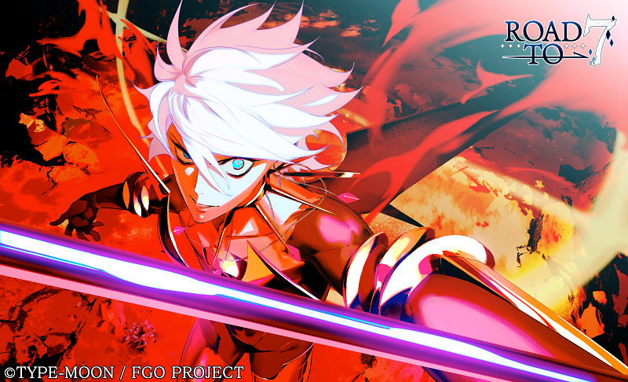
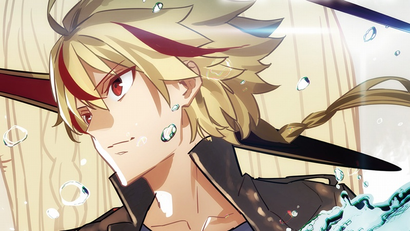
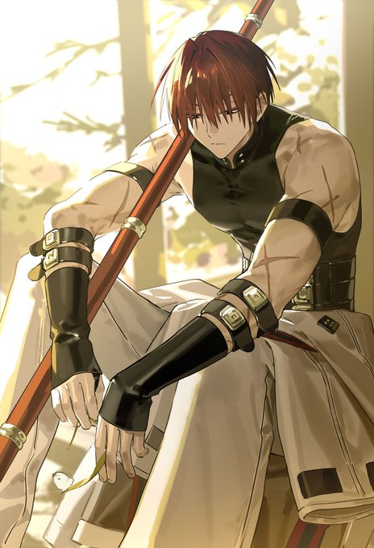
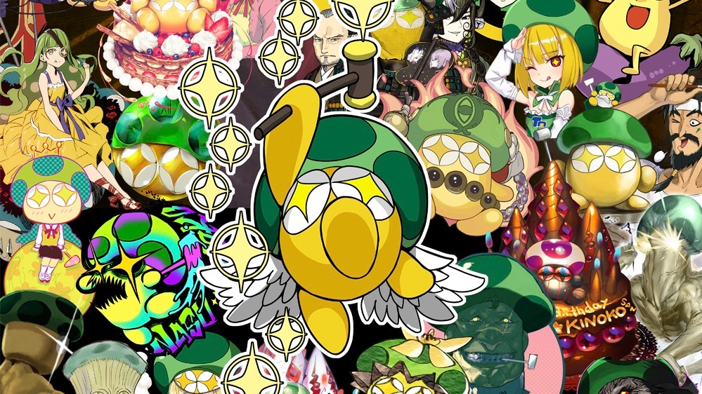
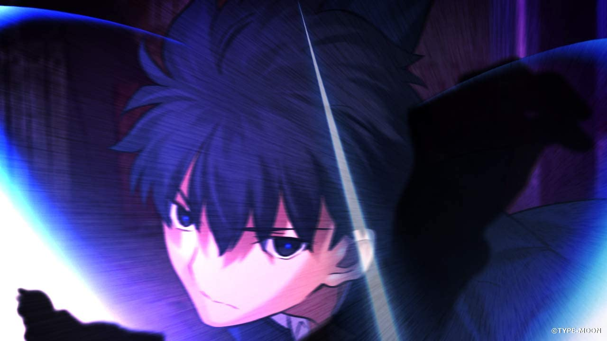
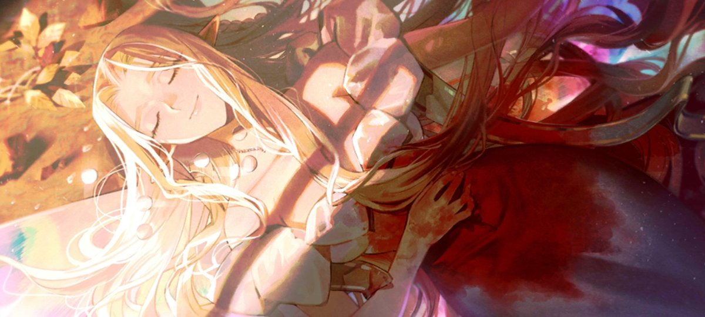

記事を公開中です。コメント投稿と閲覧数の機能は再構築中です。
EDITOR'S PICKS
おすすめ記事
おすすめ記事・最大8件
1 / 1

「カルデア大運動会か！！」スレまとめ
伊織「今日はもうこれ以上の買い食いはダメだセイバー」スレまとめ
「【閲覧注意】大変だ！カルデアが内部分裂した！」スレまとめ

「はかないマスターです」スレまとめ

「【考察】オベロンって実は」スレまとめ
「先輩、わたしたちのパン屋の名前ですが」スレまとめ

ウス、姉さんはどう見たって
「三千世界の鴉を殺し」スレまとめ

「変な夢を見たでちゅ…」スレまとめ
「儚い女！？」都市としてのテノチをめぐるスレッドまとめ
Fate/stay night
Fate/stay nightはどこから始める？3ルートの入口ガイド
Fate/Grand Order
FGOのストーリーを楽しむための初心者ガイド
LATEST ARTICLES
新着記事

遠野志貴「アルクェイドは女の子だから戦っちゃダメだ！」スレまとめ
カルナ「緊急事態だったぞマスター、緊急事態だったぞ」スレまとめ
「カルデア大運動会か！！」スレまとめ
伊織「今日はもうこれ以上の買い食いはダメだセイバー」スレまとめ
「【閲覧注意】大変だ！カルデアが内部分裂した！」スレまとめ

「オーロラって汎人類史では醜悪になるらしいけど」スレまとめ

「青子と有珠の恋愛下手ばかりネタにされるけど」スレまとめ
「はかないマスターです」スレまとめ
「【考察】オベロンって実は」スレまとめ
「先輩、わたしたちのパン屋の名前ですが」スレまとめ
ウス、姉さんはどう見たって
「三千世界の鴉を殺し」スレまとめ
「変な夢を見たでちゅ…」スレまとめ
「儚い女！？」都市としてのテノチをめぐるスレッドまとめ
「これ毒かも！？」静謐ちゃんの手洗いスレまとめ
ABOUT
Fateくらぶは、Fate・TYPE-MOON作品を楽しむファン向けの非公式ブログです。掲示板の過去ログまとめや作品紹介を通じて、話題を分かりやすく紹介します。
編集方針掲示板の内容を扱う場合は、利用ルールと引用の条件を確認します。引用は必要な箇所だけを本文と明確に分け、スレッド名・URL・レス番号を記載します。現行スレッドや削除済みスレッド、転載禁止の内容は使用しません。